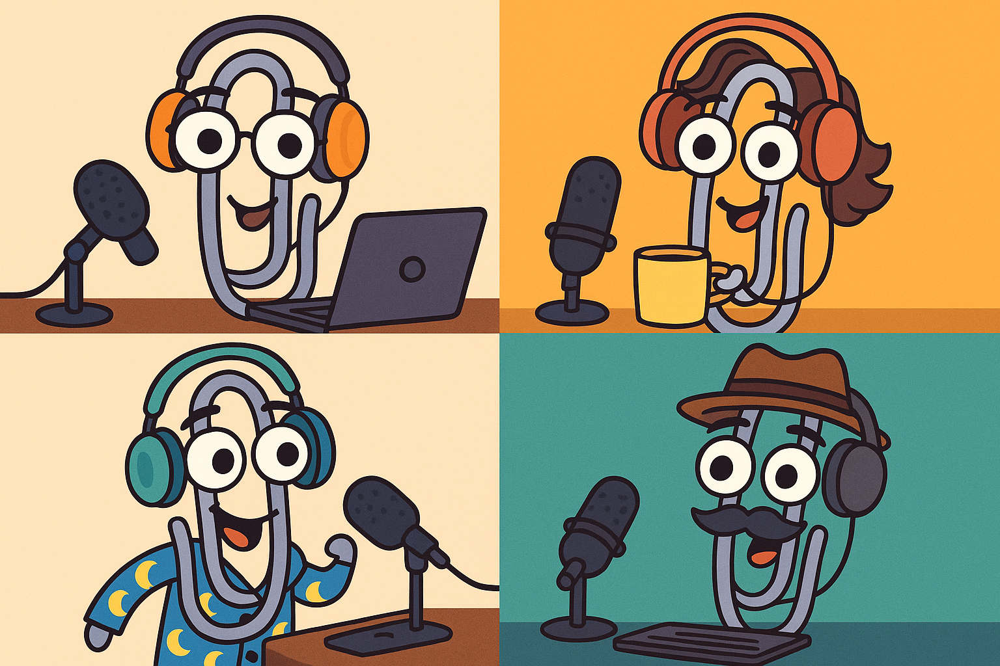

Introducing ClipCasts: Simplifying Group Podcast Production
ClipCasts simplify the recording and production of intelligent podcasts. ClipCasts are basically efficient podcasts with well thought out questions, responses, and arguments, no spam, no hot takes, no advertisements, no failed one-liners that require explanation, and no idle banter.
Please provide your describe your experiences using this process and provide your suggestions for its improvement.
Podcast Challenges
Making podcasts presents some challenges:
- The speakers may live in different time zones, making it difficult to coordinate efforts.
- Human beings are notorious for missing meetings, especially one John West.
- People use time inefficiently, which is especially unfortunate when recorded for others.
- People do not have free time to record, especially at the same assigned time.
- People do not always think through their responses before responding.
- People interrupt and overlap each other.
- Without a predefined agenda, podcasts may lack logical sequence.
- Some people may want to monetize what they consider to be their content.
ClipCast Production Process
To produce a ClipCast, the team:
- creates a WhatsApp group for each episode.
- decides whether to attempt to monetize and how to distribute the result.
- determines whether audio or video, and if video, standardizes on a format.
- determines periods, such as the length of the format clip, the length of the intro clip, the length of response clips, the length of the wrap clip, how long to wait for response clips before proceeding, how long to allow voting, and so forth.
- optionally, records a script, maybe 60 seconds, explaining the ClipCast production format.
- determines a team member to stitch clips together in real time and makes the result available to the team.
- decides whether to let additional members join the team.
- decides whether to hold firm time limits. moderator records a clip introducing the topic in a specific amount of time, maybe 90 seconds, and asks a specific question. members record short personal introductions, maybe 30 seconds, to identify the speakers.
At some point, such as after the clipcast reaches a certain length or some amount of time has expired, the moderator records a final clip with no question to pro.
Additional Rules
- In all cases, any but the last question in any clip may be considered rhetorical
- Responses may address any issue, even if unrelated to the question.
- In general, responses should end with a question.
- Responses are limited to a specific amount of time, such as 60 seconds,
- After some period of time passes, such as 60 minutes, or when the first clip arrives, the team votes on which responses to include in what order.
- Voting lasts for a specific amount of time, such as 10 minutes.
Suggestions
- Use web.whatsapp.com to copy clips to a computer.
- Use audacity to stitch clips together.